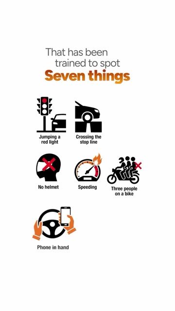
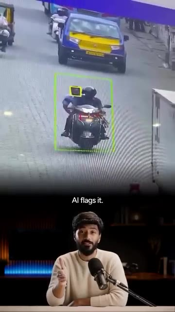
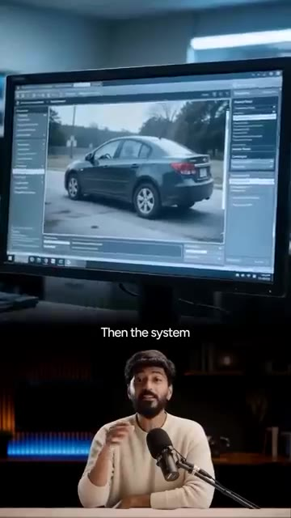
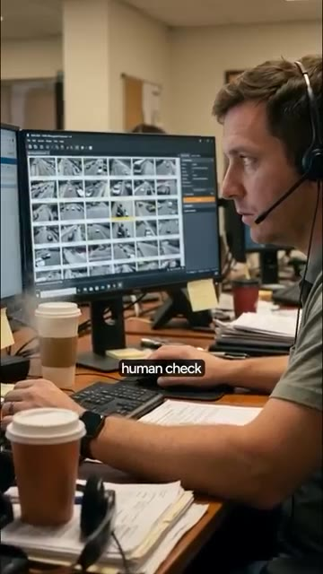

La caméra de circulation intelligente de Bengaluru a infligé une amende de 500 roupies à un homme pour avoir transporté une guitare. La semaine dernière, une femme de Bengaluru a reçu sur son téléphone une amende de circulation de 500 roupies. L'infraction était de circuler en passager sans casque, mais elle n'était pas sur le scooter. Son mari roulait seul, portant un casque avec une guitare sur le dos. Pour comprendre comment une guitare a reçu une amende, vous devez savoir comment Bengaluru détecte désormais les infractions routières.
Interface & Outils : Interface web ou mobile de consultation d'amendes de circulation.
Contenu textuel & Code : Tableau des amendes détaillant les infractions et les montants (ex: 'PILLION-NOT WEARING PROTECTIVE HEAD GEAR', 500 roupies).
Action / Démonstration : Le présentateur explique et commente des cas insolites d'amendes infligées par des caméras de circulation intelligentes à Bengaluru.
La ville exploite ce que l'on appelle l'ITMS, le Système de gestion intelligente du trafic. Considérez-le comme un réseau de 250 caméras IA réparties sur 50 grands carrefours. Ce ne sont pas des caméras de vidéosurveillance normales. Elles lisent votre plaque d'immatriculation dès que vous passez. Et elles exécutent une IA sur le flux vidéo en direct qui a été entraînée repérer 7 choses.
Interface & Outils : AUCUNE
Contenu textuel & Code : Texte affiché : "Think of it", "big junctions", "you pass,"
Action / Démonstration : Le présentateur s'exprime face caméra en expliquant le système de gestion du trafic.
Griller un feu rouge, franchir la ligne d'arrêt, pas de casque, excès de vitesse, 3 personnes sur une moto, téléphone à la main, pas de ceinture de sécurité, aucun policier n'est nécessaire. La caméra le voit, l'IA le signale. Une équipe au centre de gestion du trafic est censée examiner la photo et la confirmer. Ensuite, le système récupère les détails de votre véhicule, génère une amende électronique et vous recevez un SMS avec un lien vers la photo.
Interface & Outils : Logiciel de surveillance et de gestion du trafic routier par IA.
Contenu textuel & Code : Graphiques illustrant des infractions routières et interfaces de vision par ordinateur. [DESC_IMAGE_3] Analyse et traitement automatisé des images de véhicules par le système.
Action / Démonstration : Explications face caméra et présentation conceptuelle.

🔍 Agrandir
🔍 Agrandir
🔍 AgrandirUn avis papier arrive chez vous. Alors, qu'est-ce qui n'a pas fonctionné avec la guitare ? L'IA a vu une grande forme noire derrière le conducteur. À peu près de la taille d'une personne. Rien qui ne ressemblait à un casque sur le dessus. Pour la machine, c'était un deuxième passager. Elle a signalé l'infraction. Et la vérification humaine ne l'a pas non plus remarquée. Le conducteur a publié la photo sur X et a identifié la police de la circulation.
Interface & Outils : Logiciel de vidéosurveillance ou de contrôle routier affichant une grille de flux vidéo.
Contenu textuel & Code : Texte affiché 'human check'.
Action / Démonstration : Un opérateur examine des images de caméras de circulation pour une vérification humaine.

🔍 AgrandirIls ont répondu en lui demandant de contacter leur service d'automatisation pour l'annuler. Maintenant, voici la partie honnête. Ce n'est pas un cas isolé. Au début du mois, également dans le Karnataka, une voiture a reçu une amende pour défaut de casque. Une voiture. La police a qualifié cela de dysfonctionnement technique. Le système est rapide, il fonctionne 24 heures sur 24, et il attrape des milliers de vrais contrevenants. Mais l'IA devine à partir d'une seule photo, et l'humain censé faire une double vérification en examine des milliers. L'IA fait la surveillance. L'humain reste la dernière ligne de défense, et cette ligne a des failles. Alors la prochaine fois qu'un e-challan arrive sur votre téléphone, ouvrez la photo avant de payer. Si vous voyez une guitare se faire verbaliser
Interface & Outils : Aucune interface ou logiciel visible.
Contenu textuel & Code : Aucun texte, code ou diapositive affiché (uniquement des sous-titres de la vidéo).
Action / Démonstration : Aucune démonstration ou manipulation en direct (vidéo d'illustration de circulation).
pour un casque, vous savez quoi faire. Avez-vous déjà eu un défi qui n'avait aucun sens ? Dites-le-moi dans les commentaires et je partage ce genre de mises à jour en premier dans ma communauté WhatsApp gratuite. Lien dans la bio.
Interface & Outils : Interface mobile WhatsApp (groupe "IND-11 | Staying Ahead Club").
Contenu textuel & Code : Texte « Join the free WhatsApp Community » et « Link in bio » affichés autour de l'interface mobile.
Action / Démonstration : Promotion et appel à l'action pour rejoindre la communauté WhatsApp gratuite du créateur.